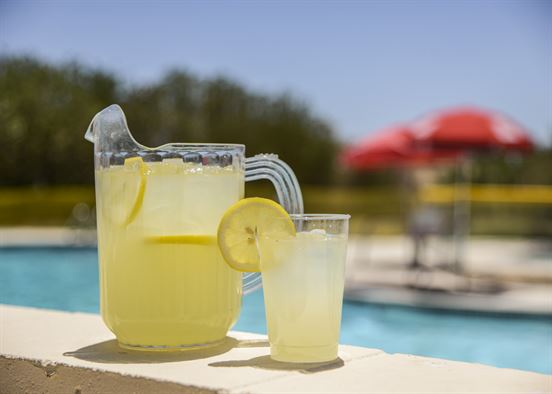
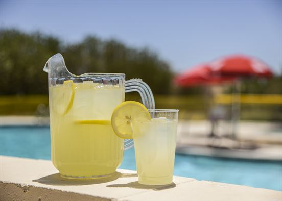

The Challenge - Vernier Science: Measure Temperature
 The Challenge
The Challenge
When you think of temperature, what do you picture? The weather? You might even imagine a hot chocolate in the winter or a cold lemonade in the summer.
Many of life's decisions are based on temperature. It affects how you dress, how your food is made, the places you decide to visit and when, and even how Earth supports living creatures.
Your challenge is to measure the temperature in real-life situations using Vernier probes and software. Then, you will use addition and subtraction to solve problems using temperature data.
.png "temperature probe")
.jpg "hot cocoa") 
 What I'll Learn
- I CAN use the Go Temp! Probe to measure temperature.
- I CAN use Logger Lite software.
- I CAN use addition and subtraction algorithms to solve problems about temperature data.